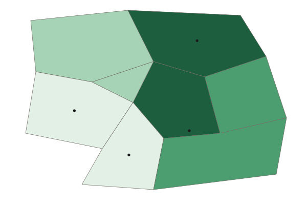

Scale of Analysis and Map Scale
Geographers use "scale" in two ways.
Part 1 · Hook
Why this matters
Part 2 · Prerequisite check
Quick check before you start
1. A legend's classes are "Under 10 million" up to "1 billion or more". What kind of number does the map show?
- A total
- A percent
- A rate per 1,000 people
- A trend
Show the answer
Counts in millions and billions are totals. A percent or a rate would let you compare places of different sizes.
- Correct: A total:
- A percent:
- A rate per 1,000 people:
- A trend:
2. What should a good source line include?
- Who made the data and the year
- The colors of the legend
- The title of the map
- The pattern the map shows
Show the answer
A source line names the maker and the year, so you know how far to trust the numbers and how old they are.
- Correct: Who made the data and the year:
- The colors of the legend:
- The title of the map:
- The pattern the map shows:
Part 3 · See it
See it first
![Two panels. Map scale: how much the map shrinks the ground, shown with a scale bar of 1:50,000; a large-scale map such as 1:10,000 shows a small area in detail, and a small-scale map such as 1:50,000,000 shows a large area with little detail. Scale of analysis: the size of the unit each number describes; one value for a whole country is the national scale, and one value for each of four provinces is the local, or subnational, scale. A note says: ask what unit each number describes; that is the scale of analysis.](../figures/skills-scale-two-meanings.svg)
Part 4 · Step by step
How it works, step by step
- Data are collected for a unit (the world, a group of countries, a country, a province)that unit sets the scale of analysis
- Values for many small units are averaged into one bigger unitthe differences between the small units disappear from view
- A question or decision is about one scaleyou need data at that scale to answer it well
Part 5 · Key ideas
Key ideas
- Map scale is a ratio such as 1:50,000: 1 cm on the map stands for 50,000 cm (0.5 km) on the ground. A large-scale map (1:5,000) shows a small area in detail; a small-scale map (1:50,000,000) shows a large area with little detail.
- The scale of analysis is the size of the unit the data describe: global (the world), regional (a group of countries), national (one country) or local (part of a country).
- A map of one country shaded by province shows local (subnational) data. It is not national just because it shows a whole country.
- A pattern can change with the scale: one national number can hide big differences between provinces or cities.
Part 6 · Misconception
A common mistake
The wrong idea: A map that shows one whole country has data at the national scale.
What actually happens: The scale of analysis is the scale of the data, not the size of the map. If each value is for a province, the data are local (subnational), even when the map shows the whole country.
Part 7 · Check yourself
Check yourself
Exam-style questions. Anything you miss goes into your review queue.
Map
Homes with internet access by province, Country A (national average: 60%)

Homes with internet access (percent, invented)
- Under 40%
- 40% to 59%
- 60% to 79%
- 80% or more
1. What is the scale of analysis of the data on this map?
- Local (subnational): one value for each province
- National: the map shows the whole of one country
- Global: the data could be compared with other countries
- Regional: Country A counts as a region of the world
Show the answer
Ask what unit each number describes. Each shade is one province, so the scale of analysis is local (subnational), not national.
- Correct: Local (subnational): one value for each province: Right: the scale of analysis is set by the unit each value describes. Here that unit is a province, a part of the country.
- National: the map shows the whole of one country: This is the common slip. The map covers one country, but each shade describes one province, so the data are subnational.
- Global: the data could be compared with other countries: Global data would have values for countries across the world. This map has values for provinces in one country.
- Regional: Country A counts as a region of the world: The regional scale is a group of countries. Each value here is for one province inside one country.
2. The title gives one national figure: 60% of homes have internet access. What does the map show that the national figure hides?
- Access is about 60% in each province, just as the national figure says
- Access is 80% or more in the Capital Region but under 40% in the Western Uplands
- Country A has more homes with internet than its neighbors have
- Access is rising faster in the Western Uplands than it is in the Capital Region these days
Show the answer
One national number can hide large differences between provinces. Reading the data at a smaller scale shows them.
- Access is about 60% in each province, just as the national figure says: The shades run from under 40% to 80% or more, so the provinces are far from equal.
- Correct: Access is 80% or more in the Capital Region but under 40% in the Western Uplands: Right: a national average blends high and low provinces into one number. The map shows the gap.
- Country A has more homes with internet than its neighbors have: The map counts no homes and shows no other country.
- Access is rising faster in the Western Uplands than it is in the Capital Region these days: A rise needs data from two dates. This map shows one date.
3. Country A's government can build new internet lines in two provinces this year. Which data should it use to choose them, and why?
- The national figure of 60%, because one number is easier to compare with other countries
- A world map of internet access, because it covers the most land and the most countries
- The province data, because they show access is lowest in the Western Uplands and Southern Forest
- The province data, because the Capital Region has the highest access of any province
Show the answer
Match the scale of the data to the scale of the decision: a choice between provinces needs data by province.
- The national figure of 60%, because one number is easier to compare with other countries: The national figure gives one number for the whole country, so it cannot rank the provinces.
- A world map of internet access, because it covers the most land and the most countries: A world map would show Country A as a single value and hide its provinces.
- Correct: The province data, because they show access is lowest in the Western Uplands and Southern Forest: Right: the choice is between provinces, so the data must be for provinces.
- The province data, because the Capital Region has the highest access of any province: The province data are the right scale, but the highest access is where new lines are needed least.
4. A world map is shaded so that each country has one color for its share of people living in cities. What is the scale of analysis of its data?
- Global: the map shows the whole world
- Local: cities are measured
- Regional: the countries are grouped into world regions
- National: there is one value for each country
Show the answer
The scale of analysis is the unit of the data (here, countries), not the size of the area the map covers.
- Global: the map shows the whole world: The map's size is the world, but the unit each value describes is a country.
- Local: cities are measured: The measure is about cities, but each value is a share for a whole country.
- Regional: the countries are grouped into world regions: No values are given for groups of countries; each country has its own.
- Correct: National: there is one value for each country: Right: each value describes one country, even though the map covers the world.
5. On a map with a scale of 1:50,000, two villages are 4 cm apart. How far apart are they on the ground, in kilometers?
Type a number (km). No calculator needed: work it out by hand, as on the exam.
Show the answer
cm on the ground, and
- Answer: 2 km
6. Which map is the large-scale map?
- A map of one neighborhood at 1:5,000
- A map of the world at 1:100,000,000
- A map of a continent at 1:20,000,000
- A map of a large country at 1:10,000,000
Show the answer
In map scale, "large scale" means the fraction 1:denominator is large, so features look large and the area shown is small. It is the opposite of what the words suggest.
- Correct: A map of one neighborhood at 1:5,000: Right: 1:5,000 is the biggest fraction, so things look large and the map shows a small area in detail.
- A map of the world at 1:100,000,000: This is the smallest fraction, so it is the smallest-scale map: a large area with little detail.
- A map of a continent at 1:20,000,000: A continent at 1:20,000,000 is a small-scale map: things look tiny.
- A map of a large country at 1:10,000,000: A whole country at 1:10,000,000 is a small-scale map, even though the country is large.
Part 8 · Summary
Summary
Part 9 · Up next
What comes next
Part 10 · Connections